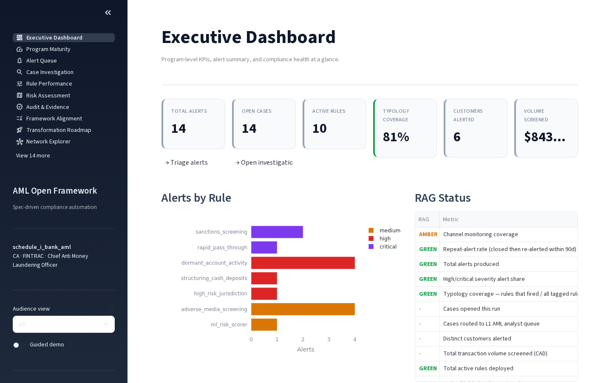
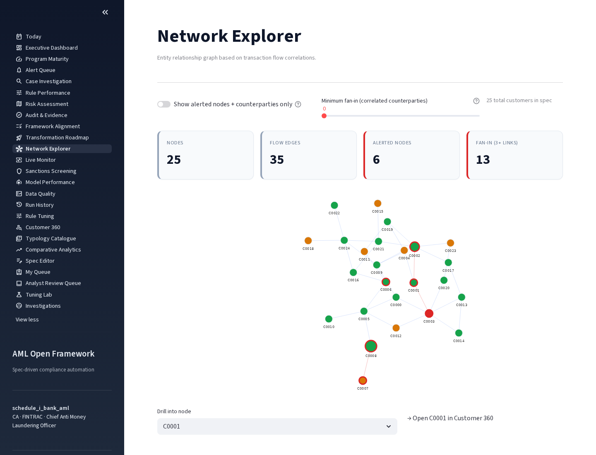
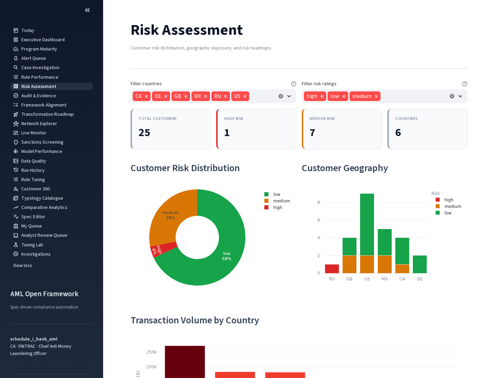
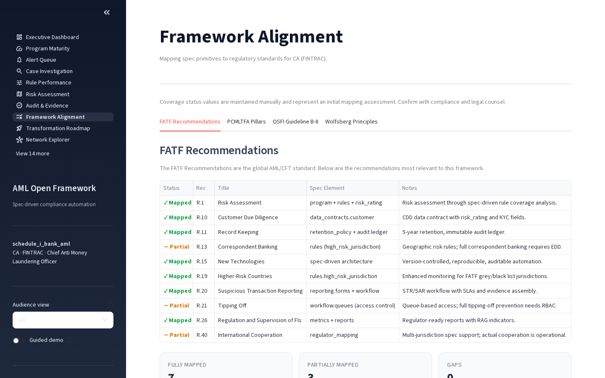

Todaypages/0_Today.py · PR 3

Executive Dashboardpages/1_Executive_Dashboard.py · PR 2

Audit & Evidencepages/7_Audit_Evidence.py · PR 4

Network Explorerpages/10_Network_Explorer.py · PR 5

Risk Assessmentpages/6_Risk_Assessment.py · PR 5

Framework Alignmentpages/8_Framework_Alignment.py · PR 1
